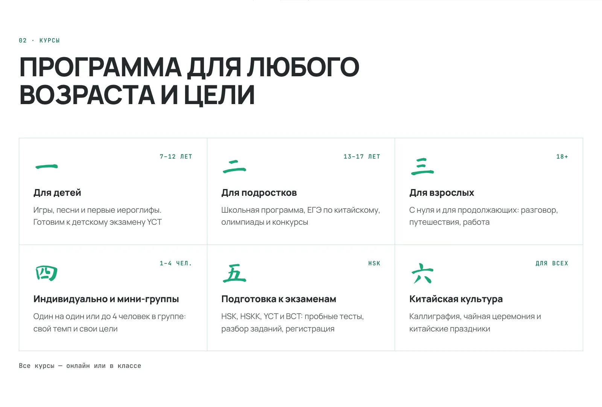
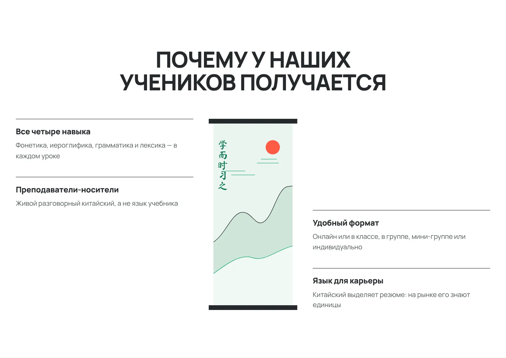
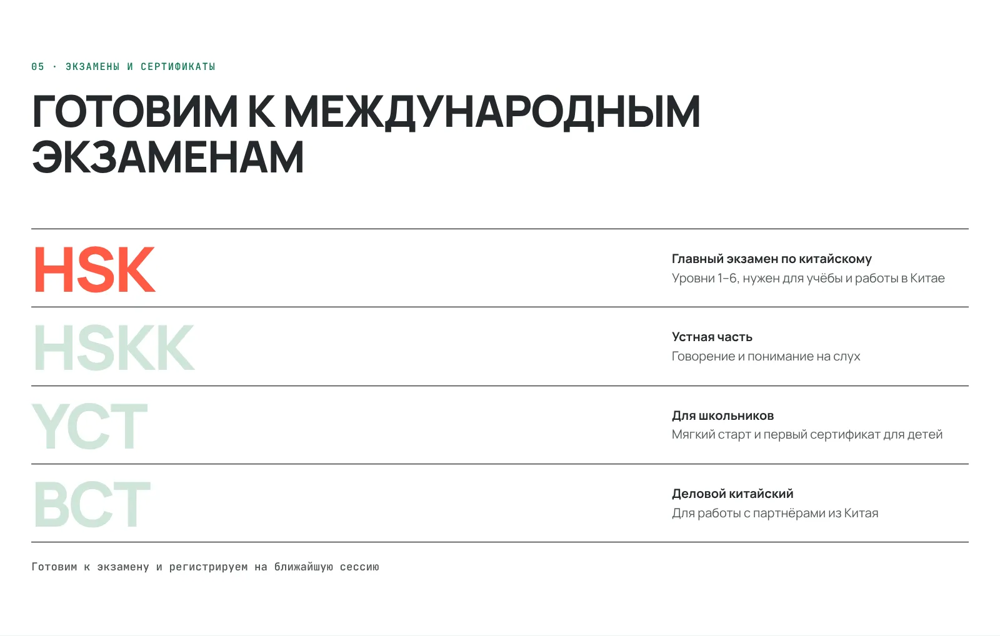
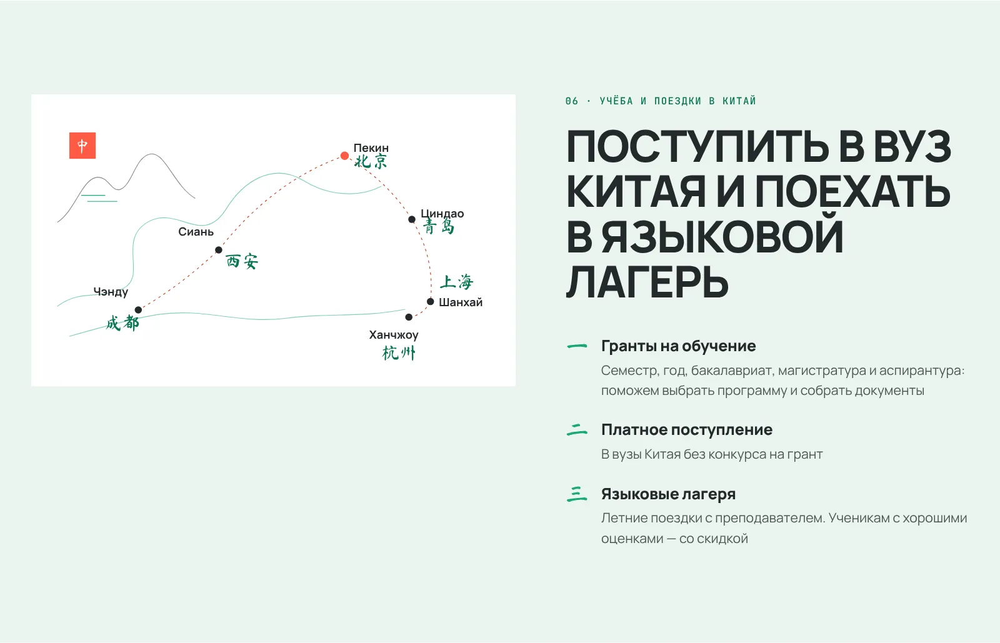
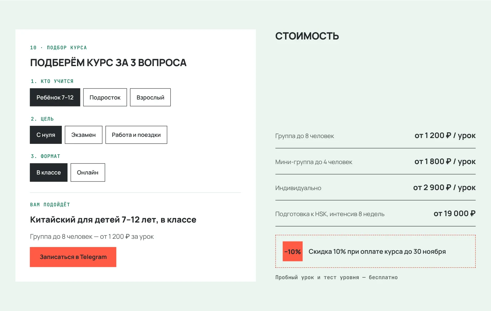
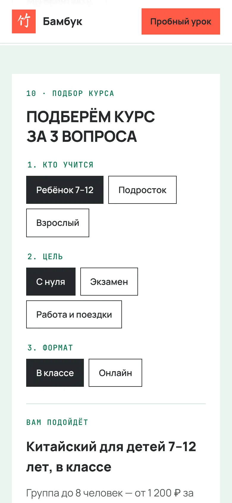
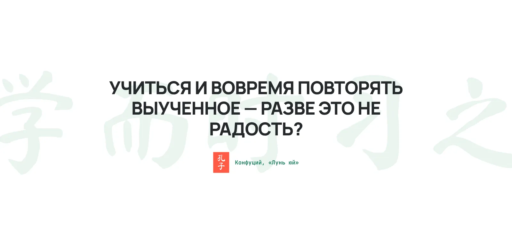
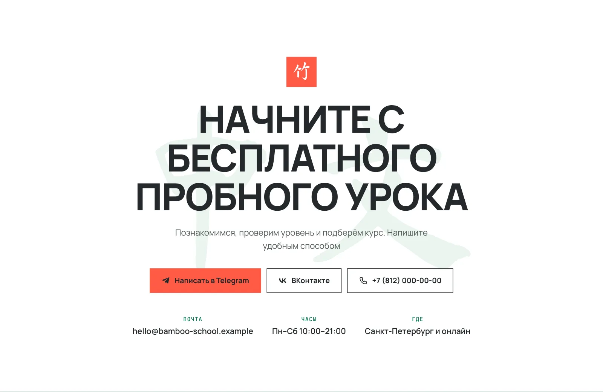
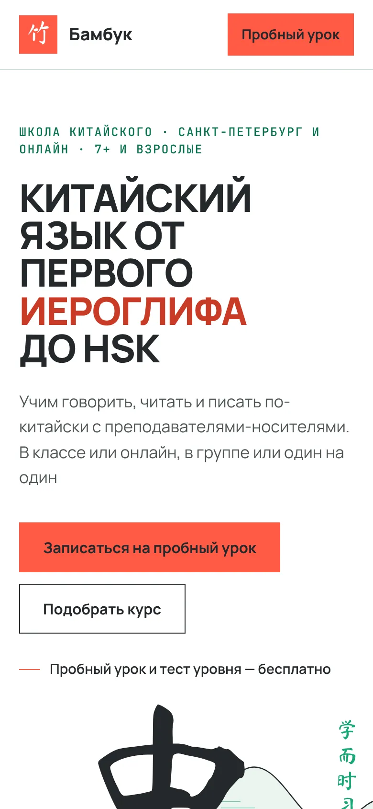

Школа китайского языка · лендинг · 2026
Бамбук
01 / 09 · первый экран
Первый экран как свиток
Тема школы и оффер считываются ещё до чтения текста
02 / 09 · стайл-гайд
Палитра «Селадон» и шрифты
Селадон отличает школу от конкурентов в красном, а коралл оставлен только для действий
Палитра
Шрифты
03 / 09 · курсы
Номера-иероглифы
Посетитель узнаёт первые иероглифы, пока выбирает курс

04 / 09 · почему у нас
Вертикальный свиток
Преимущества читаются как картина, а не как список

05 / 09 · фирменный блок · видео
Иероглиф — это конструктор
Метод школы проще показать, чем описать
06 / 09 · экзамены
Экзамены крупно
Ученик сразу находит свой экзамен

07 / 09 · учёба в Китае
Карта линией
Учёба в Китае становится конкретным маршрутом

08 / 09 · подбор курса
Квиз из трёх вопросов
Клиент получает курс и цену без звонка, а менеджер — готовую заявку


09 / 09 · финал и телефон
Пауза перед заявкой
Цитата даёт паузу перед заявкой, а мобильная версия собрана заново, а не сжата



Хочу такой сайт
Соберу сайт под ваш проект
Напишите в Telegram, что за проект и какая задача у сайта. Черновик сообщения уже готов
Хочу такой сайт t.me/maria1moon